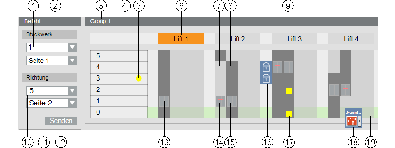
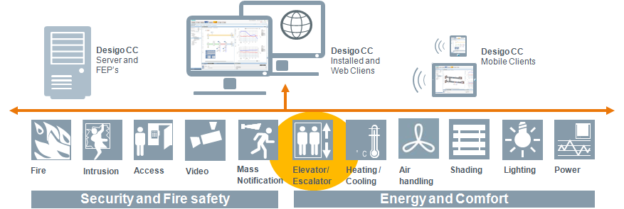
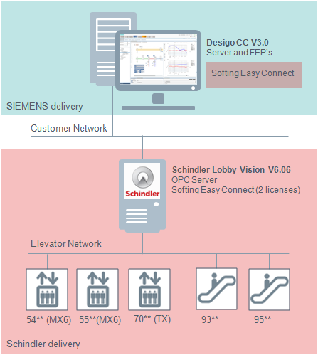
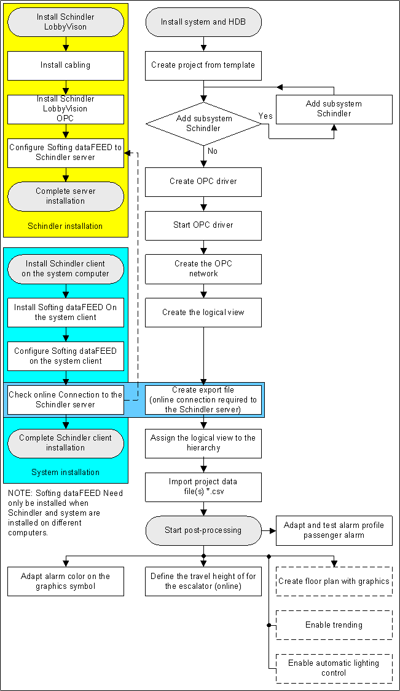

Schindler Elevators
Schindler Elevators and Escalators
Schindler supplies various forms of transportation devices for people and goods. The transportation devices operate horizontally and vertically between floors or buildings. The complexity of the transportation devices varies based on building type. For instance, a simple elevator normally suffices in a residential building. In larger business buildings, hospitals, shopping malls, airports, and so forth, a wide range of transportation devices are used that support the optimum movement of people and goods through the use of traffic management (group control).
Elevators
An elevator is a system for transporting people and goods vertically or diagonally with a travel height of one or more floors. The elevator primarily consists of a drive, wire hoist, shaft doors, and cab, and one or more cabin doors, that selectively permit entering and exiting depending on the floor properties. The elevator is operated by selecting the desired floor button. Drive commands can be ignored with priority control (for example, in case of fire or keeping the doors open for a longer period when loading goods).
Escalators
An escalator is a means of transportation for overcoming differences in heights (generally between two floors). A time switch and/or proximity indicators are used to switch on and off escalators.
Moving walks
A moving walk is a horizontal means of personal transportation and is equipped with a pallet band. It is the perfect mobility solution for public facilities such as airports, convention centers, or other buildings. A time switch and/or proximity indicators are used to switch on and off moving walks.
Address
Schindler Aufzüge AG
Zugerstrasse 13
6030 Ebikon
Switzerland
E-Mail: email@Schindler.com
Elevator Group Functionality

Graphic Objects Functionality | |||
| Description |
| Description |
1 | Floor location where the passenger is located | 11 | Passenger destination side (on Board Call only) |
2 | Passenger board side | 12 | Command, to execute the settings |
3 | Selected Elevator Group | 13 | Elevator car has only one destination side |
4 | Number of floors in the building | 14 | No entry for board and destination side |
5 | Starting point of the call | 15 | Elevator car has two destination sides (left not possible, right possible) |
6 | Is displayed in orange for out-of-service state (Color states) | 16 | Boarding or destination side is temporarily locked on this floor |
7 | Light-gray area have no boarding or destination | 17 | The passenger selects the destination floor in the elevator cab (multiple destinations possible) |
8 | Dark-gray area have a boarding or destination possibility | 18 | Passenger alarm |
9 | The normal state is displayed in gray | 19 | Green highlights the ground floor. Basement floors are displayed in pink. |
10 | Destination floor or selected direction of the passenger |
|
|
Door states | |||
Closed | Boarding or destination possible | ||
Open | Door error | ||
Open | Undefined state | ||
Close |
|
| |
Requirements for a Schindler Integration
Information from Schindler elevators can be easily integrated via an OPC interface and are a component of the Desigo CC system topology.

Requirements during the Presales Phase
- Elevators, escalators, and moving walks must be hardwired to a network. This is often not the case on older installations and must be retrofitted.
- Elevator control units must be compatible. More or less elevator information is available depending on the control type.
- The supported Schindler Lobby Vision Version is V6.06.00 or newer.
- The OPC server option must be licensed.
Required during the Engineering and Commissioning Phase
- The network to the elevators, escalators and moving walks must be operational.
- Schindler Lobby Vision must be installed on the Schindler or Desigo CC computer.
- The default names for groups, elevators, escalators, etc., must be engineered using Lobby Vision with customized short and long names. This must be conducted prior to export to Desigo CC.
- The Schindler integration test must be completed prior to integration in Desigo CC.
- Schindler service technicians must create a list with customized texts and hand it over to the supplier. The texts must include information on read and write rights.
Compatibility and Versions
Comply with the following items for successful Desigo CC integration:

System Computer
- See System Description for Desigo CC computer requirements
- Desigo CC V3.0 installation with OPC DA Integration and installed Desigo CC Schindler extension module
- Installation Softing data FEED OPC Suite Version 4.20
- Desigo CC Licensing (BA data points) is used to integrate Schindler data points
Schindler Lobby Vision Computer
- Schindler Computer Embedded/Standard Windows Computer requirements:
- Installation of Lobby Vision V6.06.00 with licensed OPC server application
- Installation Softing data FEED OPC Suite Version 4.20
- RS485/TCP Gateway
- Supported series
- Schindler Elevator PORT technology
- Schindler Elevator Series: 54**, 54**, 70**
Default Texts and State Color
The following list displays available default texts, state colors, and associated values.
Schindler Texts Available in the System | ||||
Description | Value | State Color | Read rights | Write rights |
Not defined | 0 |
| Yes |
|
Normal | 1 |
| Yes |
|
Out of service | 3 | Yes | Yes | |
Independent service | 4 | Yes | Yes | |
Fire emergency | 7 | Yes | Yes | |
Inspection | 10 | Yes |
| |
Overload | 11 | Yes |
| |
Elevator unavailable | 14 | Yes |
| |
Serious error | 16 | Yes |
| |
Overheating | 26 | Yes |
| |
Operation during an earthquake | 29 | Yes | Yes | |
Car switch stop | 35 | Yes |
| |
Technical out of service | 90 | Yes |
| |
Texts must be updated in Desigo CC since most Schindler customer projects have customized texts.
Detailed Workflow Graphic for Schindler Integration
This workflow illustrates the integration with Softing dataFEED, if Schindler and Desigo CC are not running on the same computer.
